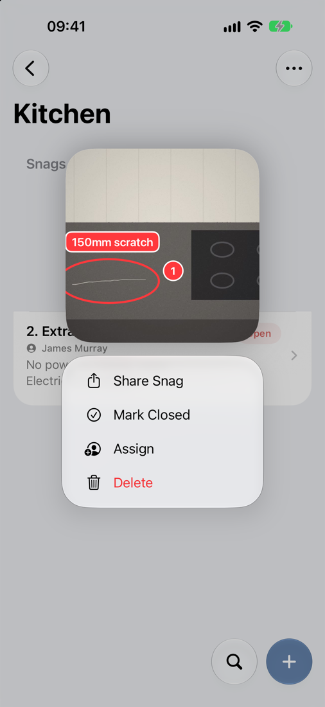
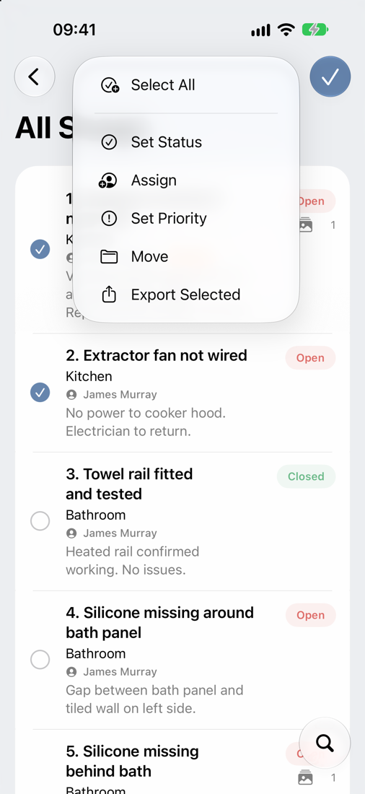

Tips and Tricks
Shortcuts and hidden features that speed up day-to-day inspection work. Tap any screenshot to open it full size.
Swipes and long presses
| Row | Swipe right | Swipe left | Press and hold |
|---|---|---|---|
| Site | – | Edit Site, Archive Site, Delete | Edit Site, Archive Site, Delete |
| Unit | – | Export PDF, Edit Details, Delete | Edit Details, Copy Locations |
| Location | Mark all snags Open or Closed | Rename, Delete | Rename, Delete |
| Snag | Mark Closed / Reopen | Assign, Delete | Photo preview, Share Snag, Mark Closed, Assign, Delete |
| Attachment | Use as Drawing | Delete | Open, Share, Rename, Delete |
Preview without opening
Press and hold a snag to see its primary photo, markup included, without leaving the list.

Bulk changes
In any snag list, tap ⋯ → Select, pick the snags, then use ⋯ to Set Status, Assign, Set Priority, Move or Export them together. Use Select All to pick everything.

Setting up faster
Default unit names
Set a Default Unit Name such as “Plot” on the site. When you add a unit, “Plot ” is already filled in. Just type the number.
Copy locations
Press and hold a unit that has its locations set up and choose Copy Locations. Then select other units and choose ⋯ → Paste Locations to add the same rooms to all of them at once.
Site defaults
Fill in client, contractor, address, inspection date and default assignee on the site. Every unit and snag picks them up, so you only enter them once.
Site drawings for house types
Add your house-type plans as site drawings, then use ⋯ → Choose Site Drawings… on each unit to show only the plans for that type.
On site
Pick up where you left off
Continue Inspection on the Inspection Hub, the Home Screen widget, or “Continue my inspection in Snaglite” to Siri all take you straight back to your last unit.
Find what still needs photos
The Missing Photos tile lists every snag without a photo, so you can catch them before you leave site.
Search in plain English
Type things like open kitchen snags, unassigned or no photos into Search.
Rotation lock
When you turn your iPhone, a lock button briefly appears. Tap it to keep Snaglite in its current orientation, which is handy when photographing ceilings and floors.
Undo a delete
After deleting a snag, location, unit or site, tap Undo on the banner at the bottom of the screen.
Drag and drop
On iPad, drag photos straight onto a snag, or images and PDFs into Attachments or Drawings, from Files, Photos, Mail or Safari.
Saving storage
When a job is finished, archive the site with Archive and Remove Full-Sized Photos. Thumbnails, notes and snag details are kept, and you can still export reports. This cannot be undone, so export the full PDF report and make a backup first. See Sites, Units and Locations.